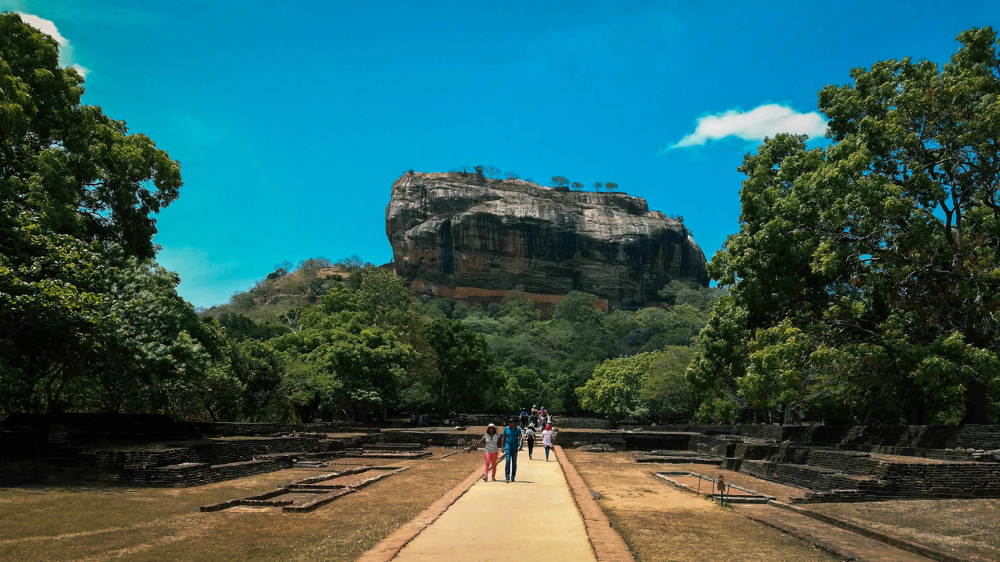

Sri Lanka — the teardrop-shaped island at the southern tip of India — packs an extraordinary variety of experiences into a country barely the size of Ireland. In a single two-week trip you can climb a 5th-century rock fortress, ride the world's most scenic train, spot leopards on a jungle safari, swim in the Indian Ocean, and sip freshly picked tea on a misty mountain estate. This is your complete guide to making every day count.
1. Best Time to Visit Sri Lanka
Sri Lanka doesn't have a single best season — it depends entirely on which part of the island you plan to visit. The island has two distinct monsoon seasons that affect different coasts at different times.
If you want to see the entire island in one trip, visit between December and March — the west, south, and cultural triangle are all dry, and Yala is good too. Only the east coast is monsoon-affected during this period.
2. Top Destinations in Sri Lanka
Sri Lanka rewards slow travelers. Here are the absolute must-visit destinations — each one completely different from the last.

Sigiriya Rock Fortress — a UNESCO World Heritage Site and one of Sri Lanka's most iconic landmarks
Sigiriya & the Cultural Triangle
The Cultural Triangle in north-central Sri Lanka is home to some of the most remarkable ancient sites in Asia. Sigiriya Rock Fortress (5th century), the Dambulla Cave Temples, the medieval royal city of Polonnaruwa, and the sacred ancient capital of Anuradhapura form a circuit that most visitors spend 3–4 days exploring. Don't miss climbing Pidurangala Rock at sunset for a view directly facing Sigiriya.
Kandy — The Cultural Capital
Set in a bowl of forested hills around a picturesque lake, Kandy is Sri Lanka's second city and spiritual heart. The Temple of the Tooth Relic (Sri Dalada Maligawa) houses what is believed to be the Buddha's tooth and draws thousands of pilgrims daily. The twice-daily Puja ceremony is a deeply moving experience. The Royal Botanical Gardens of Peradeniya, 3 km from the city, is one of the finest in Asia.
The Hill Country: Ella, Nuwara Eliya & the Train
The Kandy to Ella train is consistently rated one of the world's most scenic rail journeys. Winding through emerald tea estates, misty mountains, and past waterfalls for 7 hours, it's an experience in itself. Ella is the most popular stop — a small hill town with epic hikes (Ella Rock, Little Adam's Peak), the famous Nine Arches Bridge, and some of Sri Lanka's best cafes and guesthouses.

The emerald tea estates of Sri Lanka's Hill Country — best seen from the train window between Kandy and Ella
The South Coast: Galle, Mirissa & Tangalle
Sri Lanka's southern coastline is a 400 km stretch of golden beaches, colonial history, and turquoise water. Galle Fort — a UNESCO-listed Dutch colonial fortification — is the most charming town in Sri Lanka, packed with boutique hotels, art galleries, and restaurants. Mirissa is the whale-watching capital of the Indian Ocean (November–April), with blue whales almost guaranteed. Tangalle is for those seeking a quieter, untouched beach escape.
"Sri Lanka is like five countries in one — ancient ruins in the morning, tea estates at noon, and a beach sunset to end the day. I've been to 40+ countries and this is the one I keep returning to."
— Sarah Mitchell, UK — Nayagara Tours guest, 20253. Getting Around Sri Lanka
Sri Lanka is a small country (roughly 430 km north to south) but roads can be slow. Here are your main transport options:
- Private A/C vehicle with driver: The most comfortable and flexible option, especially for families and couples. Your driver becomes a guide, bodyguard, and local expert. This is what all Nayagara Tours packages include.
- Trains: Scenic and affordable but slow. Essential for the Kandy–Ella route. Book observation car seats in advance on the official Sri Lanka Railways website or through us.
- Tuk-tuks: Perfect for short distances within towns. Always agree on a price before getting in, or use PickMe (Sri Lanka's version of Uber).
- Buses: Very cheap but crowded and slow. Fine for budget travelers with time to spare.
- Domestic flights: FitsAir operates routes between Colombo, Trincomalee, and Jaffna. Useful for reaching the north or east coast quickly.
Driving yourself in Sri Lanka is not recommended for first-time visitors. Roads are narrow, unmarked, and shared with buses, tuk-tuks, cattle, and pedestrians. Hiring a driver is affordable ($30–50/day) and stress-free.
4. Visa & Entry Requirements
Most nationalities can enter Sri Lanka on an Electronic Travel Authorisation (ETA), which must be applied for online before arrival. The process takes 10–15 minutes and approval is usually instant.
- Apply only on the official government site (eta.gov.lk) — avoid third-party sites that charge extra fees
- Your passport must be valid for at least 6 months from your arrival date
- You can extend your visa once in-country at the Department of Immigration in Colombo
5. Budget Guide — How Much Does Sri Lanka Cost?
Sri Lanka suits every budget, from backpackers to luxury travelers. Here's a rough daily cost breakdown per person:
Entry fees to UNESCO sites like Sigiriya ($30), Polonnaruwa ($25), and Dambulla ($15) add up quickly — budget around $100–150 for Cultural Triangle entry fees alone. These are included in all Nayagara Tours packages.
6. Sri Lanka Food & Cuisine
Sri Lankan food is bold, spicy, and deeply satisfying — a cuisine built around rice, coconut, and a complex layering of spices. Don't leave without trying these:
- Rice & Curry: The national dish — a plate of rice surrounded by 4–6 small curries of meat/fish/vegetables with sambol and papadum. Eaten everywhere, morning to night.
- Hoppers (Appa): Bowl-shaped pancakes made from fermented rice batter — crispy on the edges, soft in the middle. Egg hoppers are a favorite breakfast.
- Kottu Roti: Shredded flatbread stir-fried with vegetables, egg, and your choice of meat. The rhythmic sound of the iron blades chopping kottu is the soundtrack of Sri Lankan street food.
- String Hoppers: Delicate steamed rice noodle patties, served with coconut milk curry and sambol for breakfast.
- Pol Sambol: Freshly grated coconut mixed with chili, lime, and onion — the ultimate condiment that accompanies almost every meal.

Fresh Ceylon tea from the hill country estates — always served strong and aromatic
7. Cultural Tips & Etiquette
Sri Lanka is a deeply religious country — Buddhism is practiced by ~70% of the population. A few key things to keep in mind:
- Dress modestly at temples: Cover your shoulders and knees. Remove shoes before entering any temple or religious site. Sarongs are often available to borrow at major sites.
- Never turn your back to a Buddha statue for a photo — this is considered disrespectful. Always face the statue when posing.
- Use your right hand for giving/receiving things, eating, and greeting. The left hand is traditionally considered unclean.
- Bargaining is acceptable in markets and with tuk-tuk drivers, but not in restaurants or shops with fixed prices.
- Tipping: Not mandatory but appreciated. 100–200 LKR for a tuk-tuk, 500–1000 LKR per day for a guide or driver.
"Sri Lanka gave us more warmth, more color, and more soul than we expected. The people are what make this island truly special."
— Emma van den Berg, Netherlands — Nayagara Tours guest, 20258. Essential Packing List
Sri Lanka's climate ranges from hot coastal humidity to cool misty highlands. Here's what to pack:
- Lightweight, breathable clothing (linen or cotton) — humidity is high on the coast
- A light layer or jacket for Hill Country evenings (can drop to 15°C in Nuwara Eliya)
- Comfortable walking shoes and sandals — you'll remove them constantly at temples
- High-SPF sunscreen — the tropical sun is intense year-round
- Insect repellent — especially near national parks and jungle areas
- Sarong — doubles as a temple cover-up, beach towel, and travel blanket
- Reusable water bottle — tap water is not safe to drink, and reducing plastic is important
- Power adapter — Sri Lanka uses Type D/G plugs (230V)